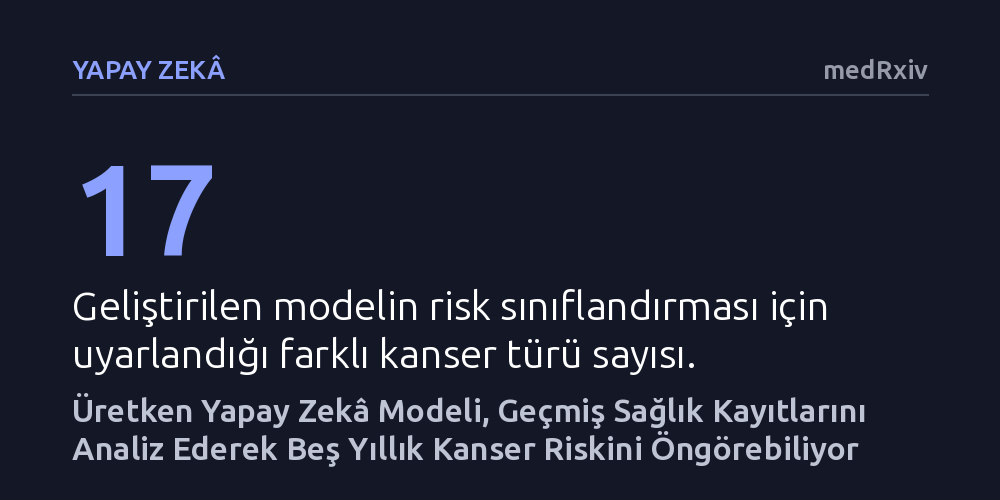

YAPAY-ZEKA · medRxiv · 2026-10-26
Araştırmacılar, milyonlarca hastanın elektronik sağlık verileriyle eğitilen üretken yapay zekâ modeli GenEHR'ın kanser riskini önceden belirleyip belirleyemeyeceğini araştırdı. Modelin, randevu aralıklarını ve sağlık geçmişini analiz ederek 17 kanser türünde beş yıllık riski başarıyla öngördüğü tespit edildi.
Rutin sağlık kayıtlarını geriye dönük tarayan üretken yapay zekâ, pankreas ve yumurtalık gibi teşhisi güç saldırgan kanserleri henüz hiçbir belirti ortaya çıkmadan yıllar önce yakalama imkânı sunuyor.

Kanser tedavisinde başarıyı belirleyen en kritik unsur erken teşhistir. Ancak pankreas ve yumurtalık kanseri gibi sinsi ve saldırgan türler, erken evrelerde belirgin bir fiziksel şikâyete yol açmadığından vakaların büyük çoğunluğu hastalık ilerledikten sonra fark edilir. Mevcut tarama programları ise genellikle belirli bir yaş grubunu veya ailesinde güçlü kanser öyküsü bulunan kısıtlı bir kitleyi hedefler. Bu durum, toplumun genelinde gelişebilecek yüksek risklerin vaktinde yakalanamamasına yol açar.
Öte yandan, bireylerin sağlık kuruluşlarına yaptıkları her ziyarette tanı kodları, reçeteli ilaçlar, laboratuvar tahlilleri ve uygulanan tıbbi işlemlerden oluşan kapsamlı bir dijital geçmiş birikir. Ancak insanların doktora gitme sıklığı son derece düzensizdir; iki muayene arasında bazen birkaç gün bazen de yıllar geçebilir. Bu düzensiz zaman aralıkları ve verilerin çok yönlü yapısı, klasik istatistiksel modellerin bir bireyin gelecekteki hastalık seyrini güvenilir biçimde öngörmesini uzun süredir kısıtlıyordu.
Araştırma ekibi bu zorluğu aşmak amacıyla büyük dil modellerinin temel çalışma prensibini sağlık verilerine taşıyan "GenEHR" adlı üretken bir yapay zekâ modeli geliştirdi. Metin üretiminde bir sonraki kelimeyi tahmin eden özbağlanımlı yapay zekâ yaklaşımı, burada hastanın geçmişine bakarak bir sonraki klinik olayı öngörecek şekilde uyarlandı. Model, farklı sağlık sistemlerinden derlenen ve milyonlarca hastanın gerçek sağlık geçmişini içeren elektronik kayıtlarla eğitildi.
Yöntemin en belirgin farkı, hastane ziyaretleri arasındaki düzensiz zaman boşluklarını yapay zekâya doğrudan tanıtması oldu. Model, temel eğitim sürecinde tanı, ilaç ve laboratuvar sonuçları arasındaki karmaşık ilişkileri öğrenerek genel bir hasta temsili oluşturdu. Ardından gözetimli uyarlama yöntemiyle, 17 farklı kanser türünün beş yıllık riskini belirleyecek biçimde özelleştirildi ve beş büyük bağımsız kohortta test edildi.
Geriye dönük olarak yürütülen kohort testleri, uygulanan gözetimli uyarlama yönteminin kanser riskini önceden tespit etme başarımını belirgin şekilde artırdığını gösterdi. Model; geçmiş tanıları, kan testlerini, verilen ilaçları ve randevu aralıklarını bir bütün olarak değerlendirerek, önündeki beş yıllık zaman penceresinde ilk kez kanser tanısı alacak yüksek riskli bireyleri başarıyla ayırt etti.
Elde edilen sonuçlar, özellikle rutin taraması bulunmayan ve erken yakalandığında tedavi şansı artan pankreas ile yumurtalık kanseri gibi türlerde yapay zekânın yüksek riskli hastaları erkenden belirleyebildiğini ortaya koydu. Üstelik modelin başarısı tek bir hastane grubuyla sınırlı kalmadı; farklı sağlık kuruluşlarına ait beş ayrı hasta kümesinde de tutarlı bir tahmin performansı sergilendi.
Bu çalışma, yapay zekânın hekimlerin yerini almasından ziyade, mevcut sağlık verilerini arka planda tarayarak riskli kişileri hekimlerin dikkatine sunan bir "klinik karar destek sistemi" olarak işlev görebileceğini gösteriyor. Böylece belirti göstermeyen ancak yüksek risk taşıyan hastalar, hedefli tarama testlerine ve koruyucu hekimlik uygulamalarına çok daha erken yönlendirilebilir.
Ancak araştırmanın geriye dönük veri kayıtlarına dayanması önemli bir metodolojik sınırı beraberinde getiriyor. Sağlık kayıtlarındaki eksiklikler, farklı kurumların farklı kodlama alışkanlıkları ve sistemsel yanlılıklar model çıktılarında yanıltıcı sonuçlara yol açabilir. Bu nedenle araştırmacılar, GenEHR modelinin günlük klinik uygulamada hastaların sağkalımını ve erken teşhisi gerçekten iyileştirip iyileştirmediğini kanıtlamak için ileriye dönük klinik denemelere ihtiyaç olduğunu belirtiyor.